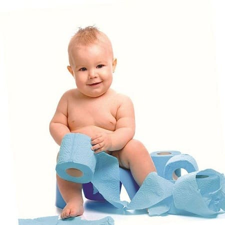
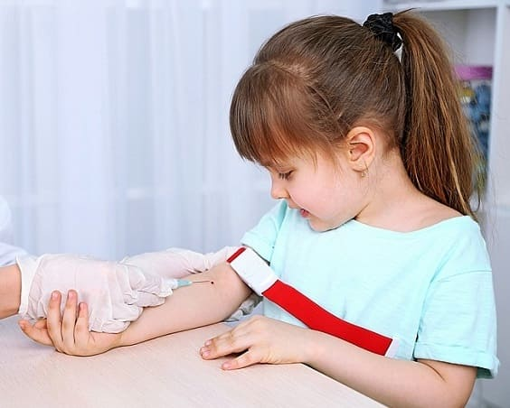
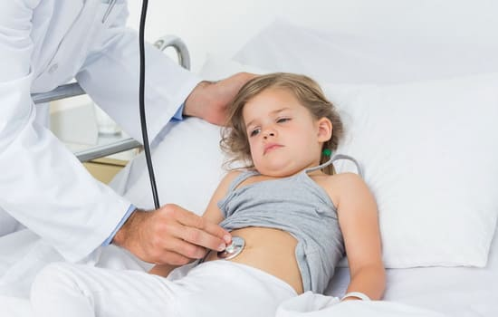
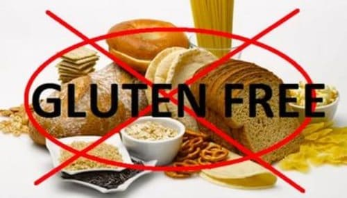
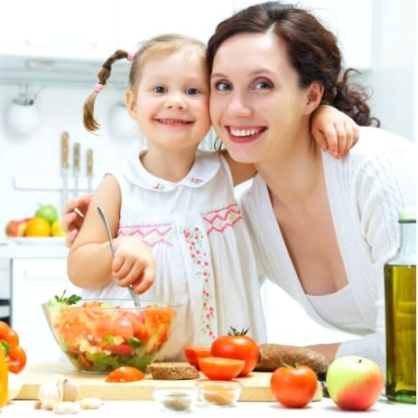

Пищевые аллергии являются одной из основных причин различных проблем со здоровьем, поведенческих нарушений и рецидивирующих заболеваний. И все же им часто не уделяют должного внимания. Ниже приведены наши советы, которые помогут вам определить, есть ли у вашего ребенка пищевые аллергии, как выявить их причину и как изменить питание вашего ребенка, чтобы улучшить его здоровье.
СИМПТОМЫ
Некоторые симптомы очевидны: заложенность носа, сыпь или диарея. И все же часто пищевые аллергии проявляются не столь явно. С ними могут быть связаны:
Рецидивирующие инфекции. Если ваш ребенок часто страдает инфекциями уха, носовых пазух или легких, это может быть вызвано ослаблением иммунной системы и чрезмерной выработкой слизи в организме из-за пищевых аллергий.
Аллергии. Хронические сыпи, экзема, крапивница, астма и аллергический ринит могут быть спровоцированы пищевыми аллергенами.
Хронический запор, диарея или боли в животе. Пищевые аллергии часто могут служить причиной хронической диареи, газов и боли в животе. Но иногда они способствуют развитию запора. Это не аллергическая реакция в полном смысле, скорее повышенная чувствительность к какому- либо компоненту пищи. Продукты и: коровьего молока часто являются виновниками запора.
Колики и газы у младенцев. Белки из маминой пищи попадают в грудное молоко и вызывают эти симптомы если у ребенка есть аллергия. У младенцев с аллергией на коровье молоке или сою может появиться реакция ш детское питание на основе этих продуктов.
Гиперреактивность или другие нарушения поведения. Пищевые аллергии гиперчувствительность к различным продуктам питания могут, безусловно, влиять на поведение ребенка и концентрацию внимания. Если ваш ребенок плохо себя ведет, обратите внимание на его рацион.

СЕМЬ САМЫХ АЛЛЕРГЕННЫХ ПРОДУКТОВ
Размышления о причинах пищевой аллергии могут любого вогнать в депрессию. Конечно, можно провести тесты, но это может быть дорого и неприятно для ребенка. Поэтому полезно знать самые распространенные продукты, вызывающие аллергическую реакцию. Попробуйте на несколько недель исключить из рациона одну или несколько из перечисленных ниже групп и посмотрите, проходят ли симптомы у вашего ребенка. Семь продуктов отвечают за более чем 90% всех пищевых аллергий. Они расположены в порядке убывания, начиная с самого аллергенного и заканчивая наименее аллергенным продуктом:
• продукты из коровьего молока. Молоко, детское питание, мороженое, йогурт, сыр, сливочное масло, сметана и любые продукты с добавлением казеина или сывороточного белка молока;
• пшеница. Хлеб, печенье, злаки, кексы, пицца, блины;
• яйца. Майонез, безе, заварной крем, выпечка, французские тосты, блины;
• соя. Соевое молоко, детское питание, соевый соус, соевые бутерброды, соевая мука, соевый творог (тофу);
• орехи. По большей части арахис (но и остальные тоже могут быть причиной пищевой аллергии), ореховое масло, печенье или шоколад с орехами, смесь из сухофруктов и орехов, пища, жаренная на арахисовом масле;
• кукуруза. Кукурузный сироп в качестве подсластителя, кукурузная мука;
• морепродукты. Креветки, крабы, лобстеры.
ТЕСТИРОВАНИЕ
Если вы уже пробовали исключать наиболее аллергенные продукты, но безрезультатно, или вы больше не хотите играть в угадайку, тогда настало время теста на пищевую аллергию. Вот различные методы:
Скин-тест. Это наиболее точный метод для детей старше 4 лет. Его выполняет аллерголог (большинство педиатров не проводят этот тест). На кожу с внутренней стороны руки наносят различные пищевые белки и отслеживается реакция. Если ребенок демонстрирует аллергию на этот продукт, аллергические антитела (их называют иммуноглобулинами Е — LgЕ) обнаружат белки и приведут к тому, что кожа в месте введения припухнет, как после укуса насекомого. Любая реакция — точное отражение аллергии. Тем не менее минусом этого теста (особенно у детей младше 3 лет) является то, что у ребенка может быть аллергия, не проявляющаяся в виде кожной реакции.
Анализ крови. Это самый лучший способ для детей младше 3 лет, потому что он лучше переносится (одна иголка в вену вместо множества подкожных уколов) и дает более точный результат в этой возрастной группе. Тем не менее у некоторых младенцев младше 12 месяцев при анализе крови не выявляется реакция на определенные продукты, даже если у них есть аллергия на эти продукты.

Существуют два типа анализа крови на аллергию:
• определение иммуноглобулина IgЕ (именуемый радиоаллергосорбентный тест — РАСТ). Он измеряет уровни антител IgЕ, которые выделяются иммунными клетками, особым образом реагирующими на аллергенную пищу. Если ваш ребенок употребляет аллергены, например, молоко, то определенное количество антител IgЕ, которые прореагируют на молоко, будут присутствовать в кровотоке. Анализ крови измеряет уровни всех антител и оценивает реакцию от 1-го (слабая аллергическая реакция) до 7-го (крайняя степень аллергии);
• определение иммуноглобулина G (IgG). Эта разновидность теста РАСТ представляет собой альтернативный способ определить пищевые аллергии (метод не одобрен FDA — комиссией по контролю за лекарственными и питательными веществами — для диагностики пищевых аллергий). IgG не отвечают за аллергическую реакцию в полном смысле. Это в большей степени акция иммунной системы в целом. Существует мнение, что продукты, вызывающие выброс IgG, подрывают иммунитет, что в свою очередь оказывает влияние на здоровье в целом, включая и нервную систему. Результаты IgG оцениваются по шкале от 0 (отсутствие акции) до 3. Путем исключения продуктов, вызывающих реакцию 2-м и 3-м уровнях, иммунная система может улучшить функционирование, и в свою очередь тел целом начинает лучше функционировать. Существует мнение, пищевая аллергия, сопровождающаяся выбросом IgG, провоцирует больше нарушений поведения, неврологических и иммунных, а пищевые аллергии IgG вызывают более классические аллергические симптомы. Теоретически тест на IgG сейчас довольно точен.
Мышечный тест, элиминационная терапия аллергии по Намбудрипад и другие альтернативные нетрадиционные подходы. В последние годы явились различные менее инвазивные методы, которые используют врачинатуропаты и остеопаты. Поскольку у нас нет никаких научных доказательств эффективности этих методов, пациенты вынуждены верить на слово, в частности при использовании элиминационной терапии аллергии по Намбудрипад. Если вы полагаете, что традиционные методы вам не подходят, мы настоятельно рекомендуем этот вид лечения.

Никакие анализы не бывают абсолютно точными. Самый лучший способ обрести уверенность — наблюдать за реакцией ребенка на еду, вызывающую подозрение. |
ЭЛИМИНАЦИЯ И ПОВТОРНОЕ ВВЕДЕНИЕ АЛЛЕРГЕННОЙ ПИЩИ
Определив, на что у вашего ребенка аллергия, исключите из его рациона все аллергенные продукты примерно на 2 месяца. Понаблюдайте, что происходит с различными аллергическими, медицинскими или поведенческими симптомами. Увидев улучшения (надеемся, они будут), переходите к постепенному и поочередному введению этих продуктов в рацион, чтобы отследить, какие именно из них оказывают негативное влияние на здоровье ребенка, чтобы избегать их в будущем. Конечно, если у вашего ребенка аллергия только на некоторые продукты и без них вы видите замечательное улучшение, мы настоятельно рекомендуем вам отказаться от этой пищи на неопределенное время и наслаждаться 1—2 годами хорошего здоровья и поведения. Однако если у него выявлена множественная аллергия, возможно, лишь некоторые из них действительно влияют
на его состояние. Вы можете определить, какие продукты являются возбудителями аллергии, по очереди возвращая их в рацион. Вот два различных способа это сделать:
Круговая диета. При этом методе вы заново вводите в рацион по одному продукту и даете его ребенку раз в 4 дня. После того как ребенок 2—3 раза употребил этот продукт, добавляете следующий — снова 1 раз в 4 дня, и так далее. Вскоре ваш ребенок снова сможет есть некоторые из этих продуктов каждый день, но не злоупотребляя. Наблюдайте, не появятся ли заново нарушения поведения, аллергии или проблемы со здоровьем. Если это случится, значит, виновником является продукт, который был повторно введен в рацион одним из последних. Действуя таким образом, вы сможете вычислить, от каких продуктов следует отказаться на долгое время.
Повторное введение продукта сразу.
Мы считаем, что более целесообразно — наблюдать за состоянием ребенка, повторно вводя продукты сразу на несколько недель. Это сузит выбор виновника при реакции на какой-либо из них.
АЛЛЕРГИИ НА КАЗЕИН И ГЛЮТЕН
До сих пор мы обсуждали пищевые аллергии в целом. Но мы хотели бы уделить особое внимание двум специфическим группам продуктов,
поскольку они могут сильнее влиять на здоровье ребенка, если у него есть аллергия или чувствительность к ним. Мы говорим о казеине — белке, содержащемся в коровьем, козьем, человеческом и любом другом молоке млекопитающих, и глютене — белке, содержащемся в пшенице и любых других зерновых (непереносимость лактозы, с другой стороны, это чувствительность к сахару, содержащемуся в молоке). Неизвестно, почему белки казеин и глютен вызывают такие сильные аллергии у некоторых людей, но, исключив их из рациона, вы можете достичь заметных результатов.
Источники казеина. Вот распространенные продукты из коровьего молока, которые надо исключить:
В состав многих готовых, мороженых, сушеных и консервированных продуктов и супов входят сухое молоко, сыр или сыворотка. Выпечка снеки обычно содержат казеин, внимательно читайте информацию 1 этикетках и выясните, какие ежедневно употребляемые продукты необходимо исключить из рациона вашего ребенка.
Альтернативные продукты, не содержащие казеина:
• рисовое «молоко» (лучше неподслащенное);
• миндальное молоко;
• соевое молоко (поскольку соя — довольно распространенный аллерген, постарайтесь свести его потребление к минимуму или избегайте вовсе его использование в качестве альтернативы молоку);
• яйца и майонез;
• безмолочные йогурты, сыры, маргарины и мороженое;
• другие немолочные источники кальция включают обогащенные кальцием апельсиновый сок и злаки, соевый творог, патоку, зеленые овощи, семена кунжута, консервированный лосось, ревень и инжир.

СОВЕТ ДОКТОРОВ СИРС: КАЗЕИН, ГЛЮТЕН И ПОВЕДЕНИЕ Есть данные, что у некоторых детей с проблемами поведения (аутизм, синдром недостаточности внимания, гиперактивность, чрезмерные вспышки гнева) резко улучшались способности и поведение, когда их переводили на диету без глютена и казеина. Некоторые дети быстро успокаиваются при таком питании. Мы видели это в действии на собственной практике. Хотя это помогает не всем, но попробовать стоит. |
Источники глютена (зерновые, которые содержат этот белок):
• пшеница;
• овес;
• ячмень;
• рожь;
• манная крупа;
• пшеница спельта (полба);
• тритикале (помесь ржи и пшеницы);
• камут (торговая марка американской полбы).
Эти зерновые используются в производстве большинства готовых каш, хлеба, муки, выпечки и быстрорастворимых смесей. Здесь тоже очень важно читать информацию на этикетках. Глютен может содержаться в некоторых натуральных и искусственных ароматизаторах, специях, соусах и декоративных элементах. Если ваш ребенок любит какой-то продукт, но ингредиенты не ясны, свяжитесь с производителем.
Альтернативные, не содержащие глютена источники белка:
НАЧАЛО ДИЕТЫ
Лучше всего исключать эти продукты по одному. Придерживаться диеты без казеина легче, поэтому мы предлагаем вам начать с нее и соблюдать три-четыре недели, пока не появится результат. После того как вы придете к выводу, помогла она или нет, подключите диету без глютена, чтобы увидеть, не улучшится ли состояние ребенка еще больше. Для достижения положительных результатов необходимо ограничить употребление глютена на срок до двух месяцев. Если все симптомы пищевой непереносимости, которые вы наблюдаете у своего ребенка, проходят на безказеиновой диете, возможно, будет не лишним также отказаться от глютена.
СОВЕТ ДОКТОРОВ СИРС: ПРОВЕРЬТЕ ВАШ МЕСТНЫЙ МАГАЗИН ЗДОРОВОГО ПИТАНИЯ В соответствии с растущим спросом на безглютеновые и безказеиновые продукты в большинстве магазинов здорового питания появились целые отделы, отведенные под них. Вы можете найти замену практически всему. |

Здоровье ребенка от докторов Сирс / Сирс У. и др.